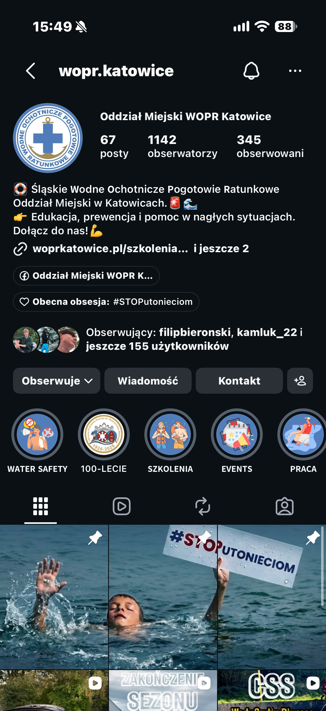
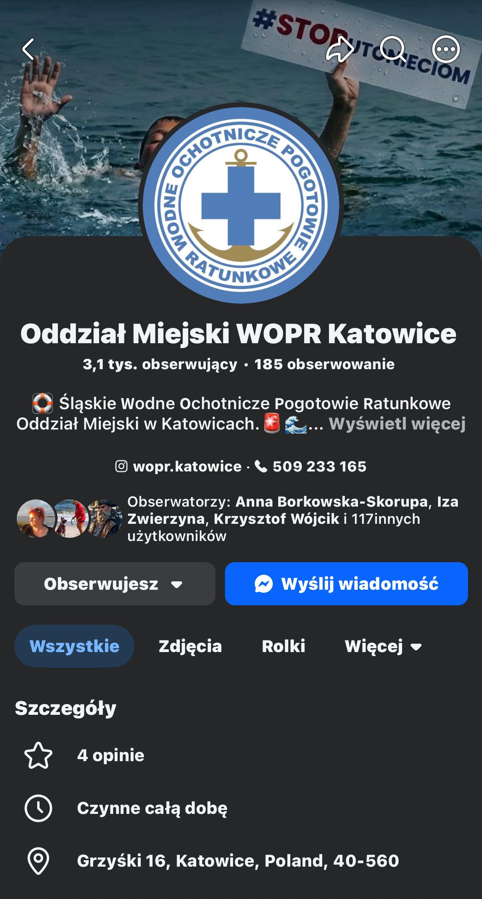

LMS • System Centralny
PZS Śląskie WOPR — Platforma Zdalnego Szkolenia
Wdrożenie IT i administracja • Mikołaj Skorupa
Wojewódzka platforma e-learningowa dla ratowników WOPR oparta na systemie Moodle. Umożliwia prowadzenie kursów online, testów wiedzy i obieg dokumentacji szkoleniowej.
- Elektroniczny dziennik szkoleń: Rejestr obecności, zaliczeń i postępów uczestników kursów.
- Strefa kursanta i instruktora: Dostęp do materiałów dydaktycznych, sprawdzianów online i weryfikacji tożsamości.
- Administracja i bezpieczeństwo: Zarządzanie bazą MariaDB/MySQL, regularne kopie zapasowe i wsparcie techniczne.
PHP
Moodle LMS
MariaDB / MySQL
Dziennik Szkoleń
JavaScript ESM
Apache / Nginx
Prowadzone profile i współprace.
Jak prowadzę media społecznościowe dla instytucji, marek i w projektach autorskich.
WOPR Katowice & Śląskie WOPR
W Oddziale Miejskim WOPR w Katowicach dbam o to, by sprzęt i sieć działały bezawaryjnie, a profile w sieci były żywe i angażujące. Regularnie publikuję posty, montuję rolki i rozmawiam z firmami, które chcą wesprzeć ratowników sprzętem lub sponsoringiem.


Partnerzy i sponsorzy, z którymi współpracowałem:
Marki i firmy, z którymi bezpośrednio nawiązałem współpracę promocyjną lub sprzętową dla WOPR Katowice:
Wspólna realizacja wideo na 100-lecie ratownictwa; występ w roli ratownika.
Współpraca w obszarze technologii internetowych i wsparcia projektowego.
Pozyskanie partnera i współpraca w zakresie sprzętu komputerowego.
Wspólne inicjatywy promujące bezpieczny wypoczynek nad wodą.
Doposażenie jednostki w profesjonalny ekwipunek ratowniczy.
Wsparcie sprzętowe przy zabezpieczeniach wodnych i eventach.
Niezawodna łączność bezprzewodowa dla ratowników podczas akcji i ćwiczeń.
Współpraca w zakresie systemów informatycznych dla służb ratunkowych.
Studenckie Koło Naukowe BioSoft (Politechnika Śląska)
Współprowadzę media społecznościowe koła naukowego BioSoft. Przygotowuję rolki wideo i grafiki prezentujące projekty badawcze z zakresu informatyki medycznej i sztucznej inteligencji.
TikTok @wopr.official (Zarząd Główny WOPR)
Jako członek Komisji Profilaktyki i Komunikacji Społecznej Zarządu Głównego WOPR nagrywam i montuję krótkie filmy na TikToka. Pokazujemy zasady bezpieczeństwa nad wodą z humorem i w nowoczesnej formie.